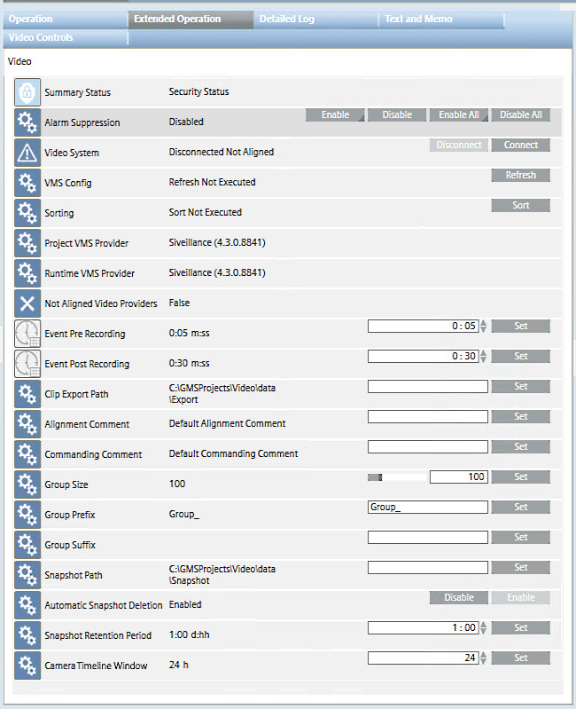
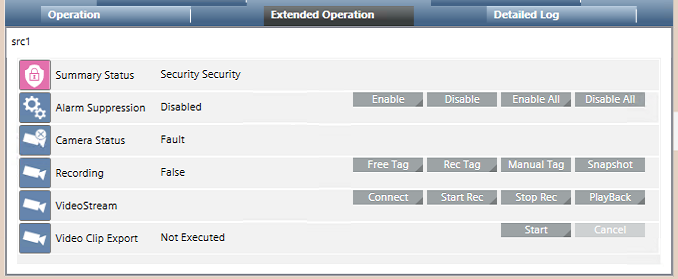
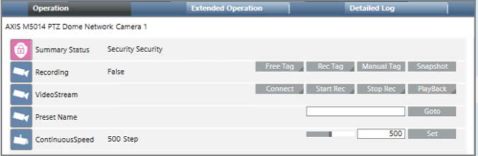
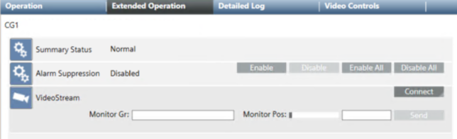
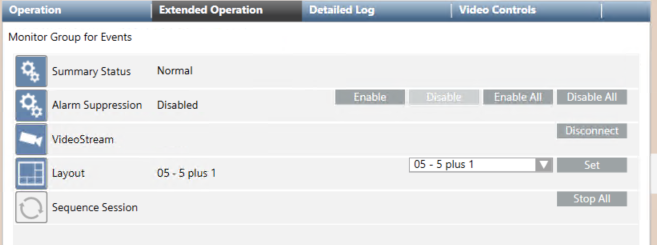
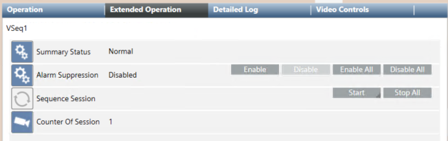
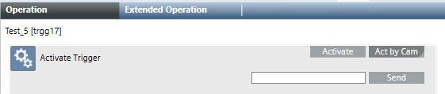

Video Properties and Commands
You can check video properties and issue control commands manually, from the Contextual pane, or using automated mechanisms such as macros/reactions.
Global Video Control Commands
When you select the main Video folder in System Browser, the Extended Operation tab provides you with the connection status and various commands relating to the video system as a whole.

Property | Values and Commands | Notes | |
|---|---|---|---|
Video System |
| Desigo CC can display video streams and provide video functionality. | Only on first Connect, a Refresh and Sort are automatically performed, to initially acquire video objects into System Browser and sort them into their groups. For subsequent Connect commands, a manual Refresh must be done first if the VMS configuration has changed. And a manual Sort command may be needed after to rearrange the video objects in System Browser
NOTE: While the Video System status is |
| Video streams and functionality are not available in Desigo CC and configuration changes will not propagate to System Browser. | ||
| Video streams and functionality are not available in Desigo CC and configuration changes will not propagate to System Browser. | ||
| A Connect command was issued when the Video System was | ||
| Initial acquisition of the VMS configuration after a restart of the VMS server or Desigo CC server computer. | ||
Connect | Display video streams and provide video functionality in Desigo CC. | ||
Disconnect | Stop displaying video streams and providing video functions in Desigo CC. | ||
VMS Config |
| Status after a refresh command is successfully executed, and cameras configuration successfully acquired into Video Configurator tab. | The Refresh command acquires any configuration changes made in the VMS (for example, to cameras or triggers) into the Video Configurator tab. It can be issued when the Video System property is However the changes in Video Configurator will only propagate to System Browser when the Video System is NOTE: Enable/Disable of cameras in VMS is propagated into Video Configurator without a Refresh command. All other configuration changes require a Refresh to be acquired into Video Configurator. |
| Status with a new project or after a project restart, when no refresh has been executed yet. | ||
| The refresh timed out, was unable to acquire the cameras configuration from the VMS. | ||
| A Refresh command was issued, and the cameras configuration is being acquired from the VMS. | ||
Refresh | Acquire changes to the cameras configuration from the VMS into the Video Configurator tab. | ||
Sorting |
| A Sort command was issued and completed without error. | Video objects in System Browser are shown grouped (see Group Size, below) and arranged alphabetically by description within the groups. When video objects are added, deleted or renamed, a manual Sort command may be needed to correctly rearrange them into their groups. |
| Status with a new project or after a project restart, when no Sort command has been issued yet. | ||
| The video objects are being rearranged into their correct groups. | ||
Sort | Updates the sorting of video objects in the groups, and moves newly added objects from the default groups to their correct groups. | ||
Project VMS Provider | example: | The VMS provider set for the project. This initially corresponds to the active provider that was selected in SMC when creating the project (Provider Selection field in the Video Services Settings expander). It can be changed by selecting a different active provider in SMC, and issuing a Connect command (see Misaligned Video Providers, below). For restored projects prior to video 4.1, the provider is always given as | The Provider properties provide information relating to video management system (VMS) providers.
|
Runtime VMS Provider | example: | The VMS provider currently active in the installation. This can be changed in SMC (Provider Selection field in the Video Services Settings expander). However, if the new active provider does not match the project provider, a misaligned video providers situation occurs. | |
Misaligned Video Providers |
| The Runtime VMS Provider does not match the Project VMS Provider. This can happen when you change the current active provider, or when you restore a project that used a different provider. In this case: | |
| The two providers are aligned. No action is needed in this case. | ||
Event Pre Recording Event Post Recording | example: | The default time recording starts before an event, and Enter the time (mmm:ss) and click Set. | The Event Pre/Post Recording settings are used for event recordings in operating procedures. They define the default duration of the automatic video recordings taken in case of alarms. You can modify these defaults in the video step configuration of each operating procedure. NOTE: The Pre Recording and Post Recording values must not exceed the corresponding VMS buffering options, which define the actual duration of the event video recordings. Having the same values in both environments will result in a perfect consistency between event video recordings and related event tags. |
Group Size | example: | Defines the number of video objects in each group (default 100).
| The Group properties let you customize how video objects are grouped in System Browser. Group descriptions are constructed from a sequential number (1, 2, 3, …) with configurable text before and after, as follows: |
Group Prefix Group Suffix | example: | The prefix and suffix strings used to construct the group descriptions. If omitted, the group name will consist of just a sequential number.
| |
Clip Export Path |
| Specifies the location on disk where exported video clips are stored.
|
|
Snapshot Path |
| Specifies the location on disk of the Desigo CC server where snapshot images of video streams are saved.
The following paths are not allowed: | This path applies to all snapshots except live stream snapshots taken with the overlay icon, which are instead saved on the station where they are taken, in the Windows Pictures folder. |
Automatic Snapshot Deletion |
| Snapshots stored on the Desigo CC server will be automatically deleted after the Snapshot Retention Period expires. | Automatic removal applies only to snapshots stored on the Desigo CC server. Those stored in the Pictures folder of stations must always be removed manually. Since the system checks for and deletes expired snapshots every 12 hours, in the worst case a snapshot may be deleted 12h after its retention period is expired. |
| Snapshots will never be automatically deleted. | ||
Enable / Disable | Commands to enable or disable automatic removal of snapshots | ||
Snapshot Retention Period |
| Period of time, in days and hours, for which a snapshot may be stored. Counted from the moment when the snapshot is taken. Default is 24h. If Automatic Snapshot Deletion is enabled, snapshots older than this will be automatically deleted the next time the system checks for expired snapshots. By default this check happens at midnight and midday. (see Snapshot Deletion Time, below).
| |
Snapshot Deletion Time |
| This property is hidden by default, and can be made visible by customizing the library. Time of day when expired snapshots are deleted (from 0 to 23). Deletion happens every 12 hours starting from the specified time. Default is 0, meaning that snapshots are deleted at midnight and midday.
| |
Camera Timeline Window | example: | By default the camera timeline shows recordings and tags for the latest 24 hours of camera operation. If you see a
| |
Camera Control Commands
When you select a camera in System Browser or click a monitor in the video view, properties and commands for that camera display in the Operation and Extended Operation tabs.

In the case of a PTZ camera, additional controls display in the Operation tab only.

Property | Values and Commands | Notes | |
|---|---|---|---|
Camera Status |
| camera properly connected |
|
| video signal loss | ||
| the camera is connected but was disabled in the VMS | ||
| the VMS is not reachable, so the camera status cannot be determined | ||
Recording |
| The camera is currently recording, as a result of a Tag or Rec command. | |
| The camera is not recording | ||
Manual Tag | Tags the current point in the video recording, or Click Manual Tag. | This command is equivalent to clicking
| |
Free Tag | Tags + comments the current point in the video recording, or Click Free Tag, enter a comment and click Send |
| |
Rec Tag | Tags + comments a span of time around the current point in the video recording, or Click Rec Tag, set the Pre-rec and Post-rec offsets that define the span of time, and enter a comment and click Send TIP: The Pre-rec and Post-rec values should match the corresponding VMS buffering options (Bookmark Rule), which define the actual duration of the video recordings. Having the same values in both environments will result in a perfect consistency between recorded videos and related event tags |
| |
Snapshot | Takes a snapshot of the live stream from the selected camera. The image is saved on the Desigo CC server at the path specified by the Snapshot Path property of the main video node. |
| |
VideoStream | Connect | Connects the selected camera to a monitor. You must specify the exact monitor description (case-sensitive) as a parameter. Drag-and-drop is not supported in the contextual pane. Click Connect, specify the monitor description and click Send. NOTE: Disconnecting the camera requires issuing a command to the monitor object. See Monitor and Monitor Group Commands, below. | This command is equivalent to dragging a camera onto a monitor in the video view or onto the corresponding monitor icon of the video wall.
|
Start Rec | Starts recording on the selected camera. Click Start Rec, specify one of the recording types below, and click Send:
|
| |
Stop Rec | Stops recording on the selected camera. Click Stop Rec, specify the correct recording type (Continuous, Event, Manual), and click Send. |
| |
PlayBack | Plays back a recording made on the selected camera. Click PlayBack, specify the parameters below and click Send to search for and play the recording:
|
| |
Video Clip Export |
| No clips have been exported yet | |
| The last video clip export was successful | ||
Start | Exports a recording from the selected camera to a file. Click Start. Specify the start and end dates/times, and click Send to export the video clip The exported file is stored in the location set in the Clip Export Path property of the main Video node. |
| |
Cancel | Interrupts the clip export currently in progress. | ||
PresetName | Goto | Moves a PTZ camera to a preset position. Enter the preset position (case-sensitive) and click Goto
| This command is equivalent to using the PTZ panel to select a preset from drop-down list, or clicking one of the P1-P6 buttons
|
Continuous Speed | Set | Sets the motion speed of a PTZ camera. Enter the desired speed (steps) and click Set |
|
 on the monitor where the images are streaming.
on the monitor where the images are streaming.

Tag Commands
- If video recording is already active, the tag commands simply add the tag to the recording in progress.
- If the camera is not currently recording, depending on configuration the tag commands may automatically start the recording, creating a video clip whose duration depends on the VMS buffer settings. Refer to Milestone / Siveillance VMS Reference or check with your system administrator whether a separate Start Rec command is required in your system.
NOTICE

Continuous Recording
On some VMS models, the command Start Rec > Continuous is not available (it has no effect). In such cases, you may use the Start Rec > Manual to start a continuous recording, taking into account that the recording will stop and not start again automatically after a VMS system reboot.
For a more robust solution, check with your system administrator to find out which direct commands are available in the VMS software and how to use them.
Camera Group Commands
When you select a camera group in System Browser,properties and commands for that camera group display in the Operation and Extended Operation tabs.

Property | Values and Commands | Notes | |
|---|---|---|---|
VideoStream | Connect | Populates a monitor group with video streams from the selected camera group. . Click Connect. Enter the below parameters and click Send:
| This command is equivalent to dragging a camera group onto a monitor in the video view.
Note: to disconnect the cameras requires issuing a command to the monitor or monitor group objects. See Monitor and Monitor Group Commands. |
Monitor and Monitor Group Commands
When you select a monitor or monitor group in System Browserproperties and commands display in the Operation and Extended Operation tabs.

Property | Values and Commands | Notes | |
|---|---|---|---|
VideoStream | Disconnect | Disconnects the selected monitor or monitor group from the connected cameras. For monitors, this disconnects the single camera. For monitor groups, it disconnects all cameras from the group | This command is equivalent to clicking X on a monitor to disconnect its video source.
Note: to connect cameras requires issuing a command on camera objects. See Camera Control Commands. |
Layout | example: | The layout associated with the selected monitor group. | The layout selected here does not affect the station layout in the video view. It is applied when the monitor group object is selected directly. For details see Monitors and Monitor Groups Reference. |
Set | Select the required layout from the drop-down list and click Set. | This command is equivalent to selecting a monitor group to display its video streams in the Video tab, and then using the toolbar to set its layout.
| |
Sequence Session | Stop All | Stops all running sequences on the selected monitor or monitor group. | This command is equivalent to clicking or on one of the monitors occupied by the sequence.
|
Sequence Commands
When you select a sequence in System Browser,properties and commands display in the Operation and Extended Operation tabs

Property | Values and Commands | Notes | |
|---|---|---|---|
Sequence Session | Start | Starts the selected sequence on a monitor. Click Start. Enter the below parameters and click Send:
| This command is equivalent to dragging a sequence onto a monitor in the video view or onto the corresponding monitor icon of the video wall. Note: You can start multiple sessions of the same sequence on different monitors In macros/reactions or scripts:
|
Stop All | Stops all running sessions of the selected sequence. NOTE: To stop only the sequence running on one particular monitor, see Monitor and Monitor Group Commands. | In macros/reactions or scripts:
| |
Counter of Session |
| Indicates how many sessions of the selected sequence are currently active. | In macros/reactions or scripts:
|
VMS Trigger Commands
When you select a VMS trigger in System Browserthe command for activating that trigger displays in the Operation and Extended Operation tabs.

Property | Values and Commands | Notes | |
|---|---|---|---|
Activate Trigger | Activate | Command to activate a trigger that does not require a parameter. | These commands allow you to activate the selected trigger to execute an action in the VMS.
|
Act by Cam | Command to activate a trigger giving one or more camera names (separated by commas), as a parameter. | ||